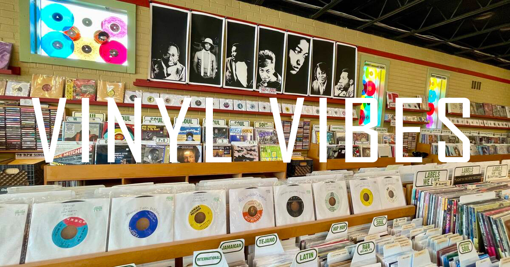

Üdvözlünk a VinylVibes-nál!
A VinylVibes egy soproni lemezbolt, amely a minőségi bakelitlemezek szerelmeseinek készült.
Szenvedélyünk a zene, és célunk, hogy ügyfeleink számára a legjobb élményt nyújtsuk, legyen szó ritka lemezekről vagy klasszikus albumokról.
A boltunkban mindenki megtalálja a saját ízlésének megfelelő lemezeket, legyen szó pop, rock, jazz vagy elektronikus zenéről.
Emellett különleges, limitált kiadású bakelit lemezeket és egyedi darabokat is kínálunk.
A VinylVibes nemcsak egy bolt, hanem egy közösségi tér is, ahol a zene iránti szenvedély összekapcsolja a látogatókat.
Számunkra fontos, hogy a vásárlók élményeket, emlékeket és zenét vigyenek haza, nem csupán lemezeket.
Az üzletünkben rendszeresen szervezünk különböző zenei eseményeket, lemezbemutatókat és DJ szetteket, hogy a zenekedvelők valóban otthon érezzék magukat nálunk!

Ritka lemezgyűjtemény kiállítás 2023-ban.
A 2023-as kiállításunkon bemutattuk a lemezgyűjtők álmait: ritka és különleges bakelitlemezeket a zeneipar aranykorából.
A látogatók megcsodálhatták a híres előadók limitált kiadású albumborítóit, és megismerhették azok történetét.
Az eseményt élő zenei előadások és interaktív bemutatók tették emlékezetessé.
Zenei esemény, helyi zenekarokkal és DJ-kkel.
Egyedi hangulatot teremtettünk a helyi zenekarok és DJ-k fellépéseivel, ahol a közösség tagjai együtt élvezhették a különféle zenei stílusokat. Az esemény célja az volt, hogy támogassuk a helyi tehetségeket, miközben a bakelit iránti szeretetet népszerűsítjük. A látogatók emellett a helyszínen vásárolhattak lemezeket, és találkozhattak az előadókkal.
Havi bakelit vásár különleges akciókkal.
A havi bakelit vásárunk a zenekedvelők kedvenc eseménye, ahol több száz különféle lemez közül válogathatnak.
Különleges akciókat kínáltunk az esemény alatt, beleértve a limitált kiadású lemezeket és a retró albumok újbóli kiadásait.
A vásár kellemes közösségi eseményként is funkcionált, ahol a résztvevők megoszthatták tapasztalataikat és szenvedélyüket a bakelit iránt.